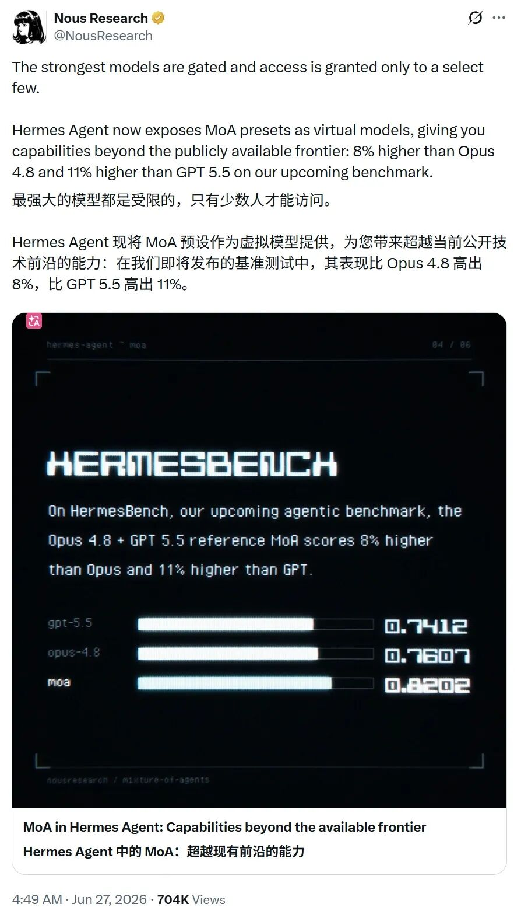
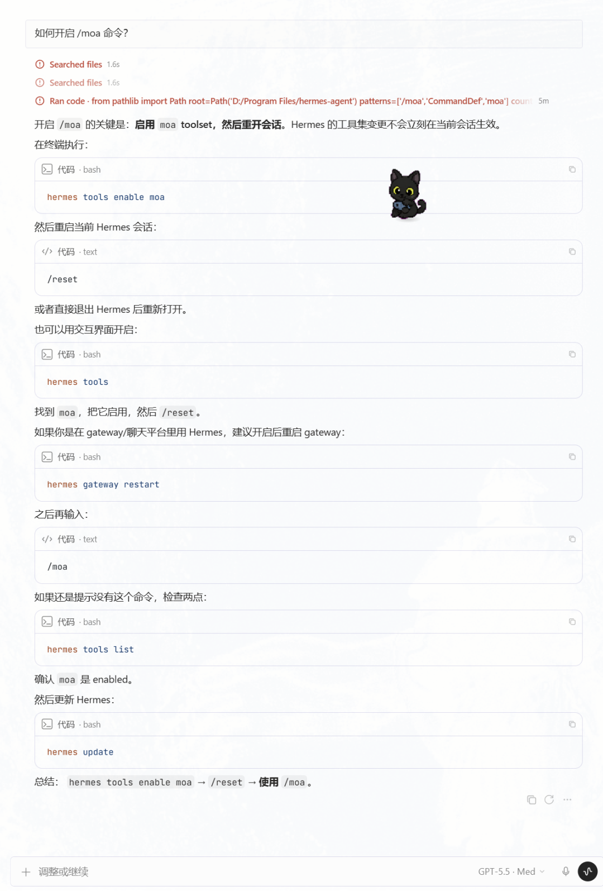

大家好，我是 One，
今天这个更新，我觉得 Hermes Agent 可以单独拿出来说一下，
不是因为它又接了一个模型，也不是因为它做了一个新按钮，
而是 Nous Research 把 MoA，也就是 Mixture of Agents，做成了 Hermes Agent 里的一个虚拟模型，
官方在 HermesBench 上放了一组结果，
opus-4.8 + gpt-5.5 reference 的 MoA preset，分数是 0.8202，
单独跑 claude-opus-4.8 是 0.7607，
单独跑 gpt-5.5 是 0.7412，
换成人话，就是 Hermes Agent 这套 MoA 组合，在这个 benchmark 上跑过了 Opus 4.8，也跑过了 GPT 5.5，

最强模型的问题，是普通人用不到
现在最强模型的问题，不只是贵，
更麻烦的是，很多普通用户根本用不到，
有的锁在企业入口里，有的要白名单，有的工具调用不完整，有的只能聊天，接不到自己的文件、终端、浏览器和自动化工作流，
所以过去我们说“最强模型”，很多时候像是在看别人家的发动机，
知道它猛，但很难装到自己的车上，
Hermes Agent 这次的思路不一样，
它没有说我要从头训练一个更强模型，
它是把几个已经很强的模型组合起来用，
先让参考模型各自思考，再把它们的分析交给一个 aggregator，由 aggregator 真正输出答案、调用工具、继续跑 Agent loop，
这件事挺现实，
很多任务不一定缺一个完美模型，缺的是多个强模型先从不同角度看一遍，然后由一个能干活的 Agent 把判断落到工具里，
参考模型只出主意，aggregator 才动手
这里有个细节很重要，
Hermes Agent 的 MoA 不是让所有模型一起乱调用工具，
参考模型不会拿到工具 schema，
它们只看用户和助手的对话文本，不看 Hermes 的系统 prompt，也不看完整工具调用 transcript，
真正写回复、决定要不要调用工具、执行后续步骤的，是 aggregator，
这个边界很关键，
如果多个模型都能动工具，Agent 会变得很难控，
谁读了文件，谁执行了命令，谁触发了外部 API，出了问题也不好追，
Hermes Agent 把行动权收在 aggregator 这里，参考模型只负责补充视角，
对普通用户来说，它仍然像是在选一个模型，
但背后其实已经变成了一次多模型协作，
用起来不是实验室功能，直接 /moa
这点我比较喜欢，
MoA 在 Hermes Agent 里不是一个额外工具集，也不需要你自己写编排代码，
它被做成了普通模型系统里的 provider，
也就是说，你可以像切模型一样切到 MoA，
/model default --provider moa
更简单一点，直接：
/moa
如果你配置了不同 preset，比如 review，也可以：
/moa review
还有一个适合日常使用的方式，
你可以只让某一次任务临时用 MoA，跑完再切回原模型，
/moa review this migration plan and find the hidden risks
简单问答、普通改写、短摘要，没必要浪费 MoA，
但如果是代码审查、系统迁移、复杂 bug、产品机会判断、长链路自动化方案，多一个强模型视角就有价值，
尤其是 Agent 任务里，错一次不是回答难看一点，而是可能真的改文件、跑命令、调接口，
还不知道如何开启/moa 命令的同学，我帮你们问了，

我会怎么实际用
如果你还没装 Hermes Agent，可以先跑官方推荐的 setup，
hermes setup --portal
先把基础链路跑通，
模型能用，工具能用，终端能用，文件能读写，再去试 MoA，
不要第一天就把所有 preset、所有 provider、所有复杂配置都堆上去，
我会先拿三类任务试，
代码和架构判断，比如迁移方案、PR review、线上故障排查，
研究和决策，比如判断一个出海 SaaS 机会是不是真需求，竞品是不是伪繁荣，某个 API 市场能不能做成产品，
长链路 Agent 工作，比如让 Hermes Agent 读资料、写脚本、跑验证、整理结果、再把流程沉淀成 skill，
这些任务不是一句回答能结束的，
它需要模型有判断，也需要 Agent 会继续干活，
MoA 的价值就在这里，
不是让答案看起来更豪华，而是让复杂任务在真正动手之前，多一轮高质量检查，
兄弟们，真可以体验下
这次 MoA 值得看的地方，不是“多模型”这个概念本身，
多模型讨论已经很多年了，
真正变化的是，Hermes Agent 把它做成了一个普通人能直接切换的模型入口，
你不需要自己写 router，不需要复制 A 模型答案给 B 模型，也不需要手动维护上下文，
更重要的是，它没有牺牲 Hermes Agent 原来的工具调用、会话历史、gateway、TUI、Desktop 和 Agent loop，
你只是在需要的时候输入 /moa，
然后让几个顶级模型先把问题想一遍，最后由 aggregator 把活接着干下去，
当然，它不是免费魔法，
MoA 会增加模型调用次数，也会增加成本，
所以我不会把它当成默认聊天模型，
我会把它当成难题模式，
遇到复杂判断、复杂执行、复杂排错时再开，
最强模型被锁在少数入口里是一件现实问题，
Hermes Agent 没有等一个万能新模型出现，而是先把现有强模型组合起来，变成一个可以调用、可以配置、可以接工具的工作能力，
这比单纯喊“模型更强了”有意思多了，
以上，